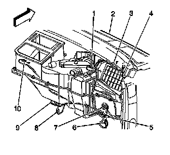
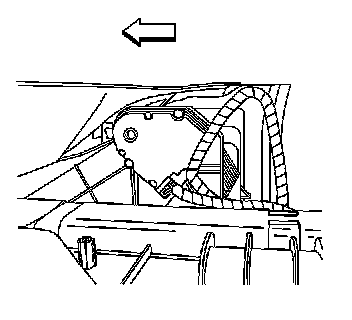

Recirculation Actuator Replacement
RECIRCULATION ACTUATOR REPLACEMENT
REMOVAL PROCEDURE
NOTE: In order to avoid actuator damage, DO NOT apply power to the actuator when it is not installed in the HVAC module.
1. Remove the air distribution duct.

2. Disconnect the electrical connection from the recirculation actuator (1).

3. Remove the recirculation actuator retaining screws.
4. Remove the recirculation actuator.
INSTALLATION PROCEDURE
1. Install the recirculation actuator.
2. NOTE: Refer to Fastener Notice.
Install the recirculation actuator retaining screws.
Tighten the screws to 1.6 N.m (14 lb in).
3. Connect the electrical connector to the recirculation actuator (1).
4. Install the air distribution duct.
5. Re-calibrate the recirculation actuator. Refer to Actuators Recalibration. Programming and Relearning